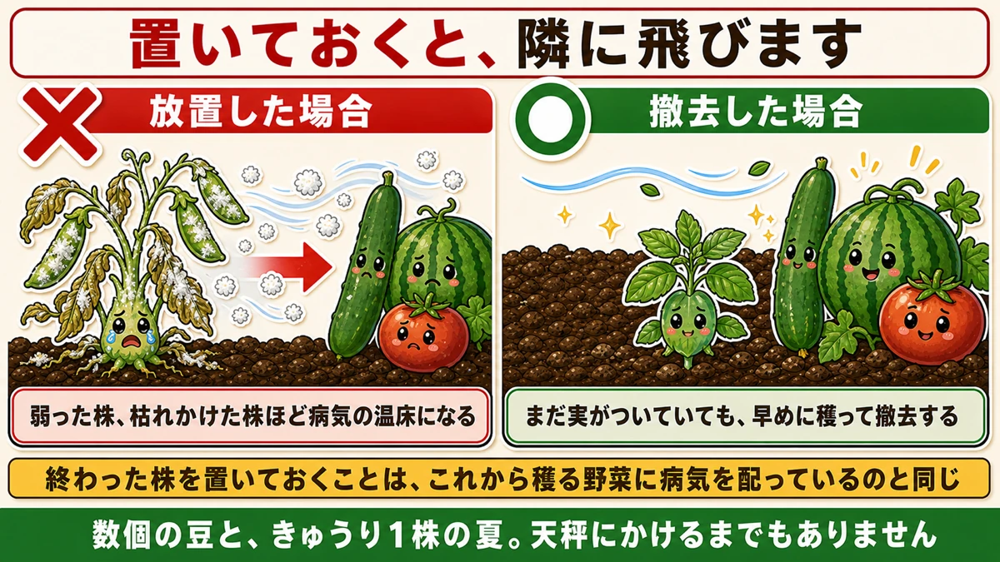
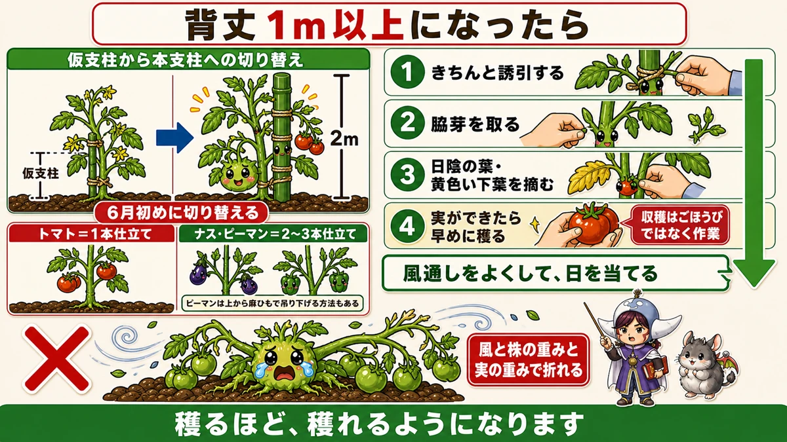
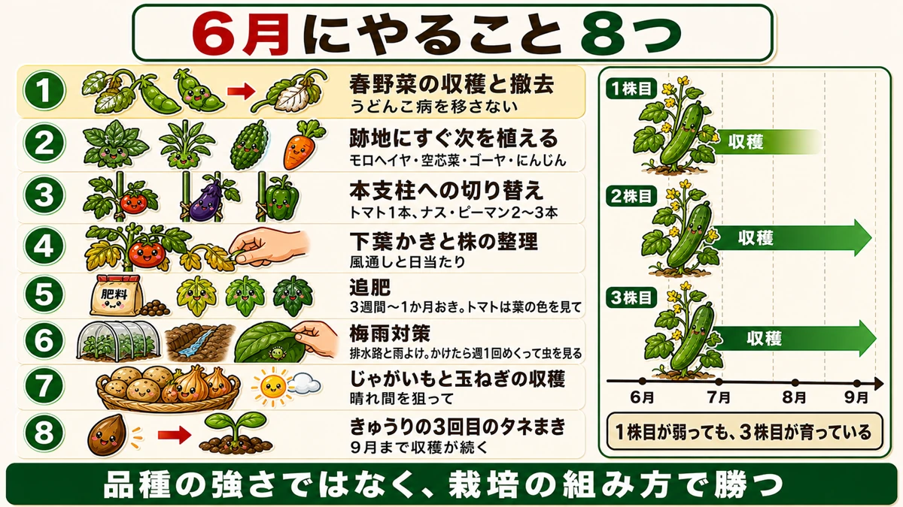

【6月にまく・植える野菜】終わった株は、その日のうちに抜いてください🌱

🗨️「やっと収穫が始まった。もう一息」
🗨️「終わった株、そのままにしてある」
🗨️「6月は何をすればいいのか分からない」
どうも、8150（えいこう）です🌱 家庭菜園歴8年、理科の教員免許を持っていて、有機・無農薬で野菜を育てています。
毎月の「今月まく・植える野菜」、6月号です。
そして6月は、性格が変わる月です。
先に、この記事でいちばん言いたいことを言っておきます。
★収穫が終わった株は、その日のうちに抜いてください。
置いておくと、★うどんこ病の巣になります。そしてその胞子が、隣で育てているきゅうりやトマトへ飛びます☺️
📖 この記事の目次
5月と6月は、性格が違います
★5月は「株を育てる月」でした
前回お話ししたとおり、5月は体づくりの月でした。
芽かき、誘引、害虫チェック。★どの野菜でも、やることはだいたい同じでした。
★6月は「野菜ごとに分かれる月」
6月からは違います。
★ウリ科とナス科で、やることがはっきり分かれます。そして春野菜と夏野菜でも、まったく別の作業になります。
同時に、こういう状況になります。
- ★4月5月に植えた夏野菜が、収穫を迎える
- ★秋に植えた春野菜が、収穫を終える
- ★気温が一挙に上がる
- ★梅雨で、雨が異常に多くなる
★収穫と管理を、同時にやる最初の月です。
ここでの手入れが、9月まで効きます
そして大事なのがここです。
★6月にきちんと管理しておけば、梅雨が明けたあと7月8月9月と、長く穫り続けられます。
逆に、6月に手を入れないと、真夏に入る前に株が疲れて止まります。★5月号でお話ししたことの、続きだと思ってください。
①★終わった株を、抜く
春野菜が、一斉に終わります
6月には、秋に植えたものが次々に終わります。
- スナップエンドウ
- そら豆
- 玉ねぎ
- にんにく
- いちご
★花が咲かなくなったら、それ以上実はつきません。撤去の対象です。
★★置いておくと、うどんこ病の巣になります
ここが今日いちばんお伝えしたいことです。
収穫が終わったスナップエンドウを、そのまま畑に置いておく。★よくあることだと思います。私もやっていました。
すると、どうなるか。
★その株が、うどんこ病の巣になります。

葉が白い粉をふいたようになって、そこで菌が増えていきます。★弱った株、枯れかけた株ほど、病気の温床になりやすい。
★そして、隣に飛びます
問題はここからです。
★うどんこ病の胞子は、風で飛びます。
近くに何を植えているでしょうか。★きゅうり、スイカ、かぼちゃ、トマト。
これから収穫を迎える夏野菜たちです。★そこへ胞子が飛んで、感染します。
つまり、★終わった株を置いておくことは、これから穫る野菜に病気を配っているのと同じです。
★実がついていても、抜く
判断に迷うのは、まだ少し実がついている場合です。
★早めに全部穫って、株ごと撤去してください。
残りの数個を惜しむより、★うどんこ病を夏野菜に移さないことを優先します。
★数個の豆と、きゅうり1株の夏。天秤にかけるまでもありません。
②★跡地を、空けたままにしない
空いた場所は、虫の場所になります
株を抜いたら、そこが空きます。
★そのまま放っておかないでください。
何が起きるか。
- ★雑草が一気に増える
- ★害虫が繁殖する場所になる
- ★卵を産む場所を、わざわざ作ってしまう
空いた土は、誰かが使います。★こちらが使わないなら、草と虫が使います。
★間を空けずに、次を植える
だから、抜いたらすぐ次を植えます。
6月にまける・植えられるものがあります。
- ★モロヘイヤ … 暑さに強く、真夏でもよく育ちます
- ★空芯菜（くうしんさい） … 同じく暑さに強い。摘んでも次々出てきます
- ★ゴーヤ … まだ間に合います
- ★にんじん … 夏まきの時期に入ります
★モロヘイヤと空芯菜は、真夏に葉物が穫れる数少ない野菜です。他の葉物がだめになる時期に穫れるので、持っておくと重宝します。
③★本支柱に、切り替える
仮支柱では、もう支えられません
植えたときに立てた支柱は、短い仮のものだったと思います。
★6月の初めに、長い本支柱（2mほど）に付け替えてください。

まだの方は、必ずやってください。★これが遅れると、あとで取り返しがつきません。
仕立て方は、野菜で違います
★トマト … 1本仕立て（主枝1本）
★ナス・ピーマン … 2〜3本仕立て
ナスとピーマンは、あえて枝を多めに出す作り方をします。★枝の数だけ実がつく場所が増えるからです。
ピーマンには、★上から麻ひもで吊り下げる誘引という方法もあります。支柱を何本も立てるより、すっきりします。
★整理しないと、折れます
なぜ本支柱が必要なのか。
★実がつくと、株は一気に重くなります。
そこに梅雨の雨と、夏の風が来ます。
★風と、株の重みと、実の重みで、枝や茎が折れます。
前に折れた茎の手当ての話をしましたが、★そもそも折らないほうがずっといい。
★せっかく育てても、夏を越す前に株が枯れる。これがいちばんもったいない終わり方です。
④★背丈1m以上になったら、4つ
風通しを、作る作業です
トマトが1mを超えてきたら、やることが決まっています。
★1. 2mの支柱に、きちんと誘引する
★2. 脇芽を取る
★3. 日陰になった葉、黄色くなった下葉を、どんどん摘み取る
★4. ★実ができたら、早めに収穫する
★「早く穫る」も、管理のうち
4つ目が意外だと思います。
★収穫は、ごほうびではなく作業です。
実をつけたままにしておくと、株はそこに栄養を送り続けます。★次の花を咲かせる余力がなくなります。
早めに穫ると、株は「次を作ろう」と動きます。★穫るほど、穫れるようになります。
4つの目的は、ひとつです
この4つは、全部同じことを目指しています。
★風通しをよくして、日を当てること。
込み合った株は、風が通らず、日も当たりません。★病気の原因になり、害虫のすみかになります。
整理すると、★次のトマトがどんどん花を咲かせて、実をつけていきます。
⑤追肥のこと
3週間から1か月おき
前に追肥の話をしました。基本は同じです。
- ★1回目 … 植え付けから1か月後
- ★2回目以降 … 3週間から1か月おき
★間隔に幅があるのは、野菜と株の勢いで変わるからです。よく穫れているナスやピーマンは短め、そうでもない株は長めに。
★ピーマンやナスのように長く穫り続ける野菜ほど、この繰り返しが効いてきます。
★★トマトは、やらなくていいことがあります
トマトだけ、はっきり違います。
★樹勢が強ければ、追肥をしません。
葉が青々として、茎が太く、勢いがある。★そういうトマトには、元肥だけで足りています。
そこへ追肥をすると、どうなるか。
★葉ボケ・つるぼけになって、実つきが悪くなります。
★足りているところに足すと、逆効果になる。これは追肥の話でお伝えしたとおりです。
★判断は、葉の色で
見分け方も同じです。
- ★葉が濃い緑 … 足りています。追肥しない
- ★葉の緑が薄い、黄緑がかっている … 追肥を考える
★カレンダーではなく、株を見て決めてください。
6月にやること、8つ

順番に並べると
★1. 春野菜の収穫と撤去 … うどんこ病を移さない
★2. 跡地にすぐ次を植える … モロヘイヤ・空芯菜・ゴーヤ・にんじん
★3. 本支柱への切り替え … トマト1本、ナス・ピーマン2〜3本
★4. 下葉かきと株の整理 … 風通しと日当たり
★5. 追肥 … 3週間〜1か月おき。トマトは葉の色を見て
★6. 梅雨対策 … 排水路と雨よけ。★雨よけをするなら週1回めくって虫を見る
★7. じゃがいもと玉ねぎの収穫 … 晴れ間を狙って
★8. きゅうりの3回目のタネまき … 秋まで穫るための最後の1回
★きゅうりの3回目
最後のひとつだけ、補足します。
きゅうりは4月・5月・6月と3回に分けてまく、という話をしました。★6月がその最後です。
★これをまいておくと、9月まで収穫が続きます。1回目の株がうどんこ病で弱ってきても、3回目が元気に育っている。
★品種の強さではなく、栽培の組み方で勝つ。この記事の1番と8番は、実は同じ話です。
6月を越えれば
この記事の要点
- ★5月は株を育てる月、★6月は野菜ごとに作業が分かれる月
- ★収穫と管理を同時にやる最初の月
- ★6月に管理しておけば、梅雨明けから7・8・9月と長く穫れる
- ★★収穫が終わった株は、その日のうちに抜く
- ★★置いておくと、うどんこ病の巣になる
- ★★その胞子が風で飛んで、きゅうり・スイカ・トマトに感染する
- ★実が残っていても、早めに穫って撤去する。★移さないことを優先
- ★跡地を空けたままにしない。★草と虫が使う場所になる
- 6月に植えられるもの＝★モロヘイヤ／空芯菜／ゴーヤ／にんじん
- ★モロヘイヤと空芯菜は、真夏に穫れる数少ない葉物
- ★6月初めに、2mの本支柱へ切り替える
- ★トマトは1本仕立て、★ナス・ピーマンは2〜3本仕立て
- ★ピーマンは上から麻ひもで吊り下げる誘引もできる
- ★風と株の重みと実の重みで折れる。★夏を越す前に枯れるのがいちばんもったいない
- 背丈1m以上になったら★①誘引 ②脇芽を取る ③下葉を摘む ④★実を早めに穫る
- ★収穫はごほうびではなく作業。★穫るほど、穫れるようになる
- 4つの目的はひとつ＝★風通しをよくして日を当てること
- 追肥は★1回目が植え付け1か月後、以降は★3週間〜1か月おき
- ★間隔に幅があるのは、野菜と勢いで変わるから
- ★★トマトは樹勢が強ければ追肥しない。★足りているところに足すと葉ボケになる
- ★判断はカレンダーではなく、葉の色で
- ★きゅうりの3回目をまくと、9月まで収穫が続く
全部やろうとしなくて大丈夫です。まずは畑を見回して、★花が咲かなくなった株を1つ、抜いてください。それがいちばん効く6月の作業です🌱
ここまで読んでくださって、ありがとうございました。
剪定ばさみ
終わった株を抜き、伸びすぎた枝を切る月です。よく切れるものを1本。


支柱150cm
本支柱への切り替え。背丈1m以上になったら待ったなしです。
![[商品価格に関しましては、リンクが作成された時点と現時点で情報が変更されている場合がございます。]](https://hbb.afl.rakuten.co.jp/hgb/56d221a0.da732c49.56d221a1.b57a6709/?me_id=1230952&item_id=10017113&pc=https%3A%2F%2Fthumbnail.image.rakuten.co.jp%2F%400_mall%2Fnou-nou%2Fcabinet%2F5010356000109-01.jpg%3F_ex%3D240x240&s=240x240&t=picttext "[商品価格に関しましては、リンクが作成された時点と現時点で情報が変更されている場合がございます。]")
えん麦のタネ
跡地を空けたままにしないための緑肥です。センチュウ対策にもなります。
![[商品価格に関しましては、リンクが作成された時点と現時点で情報が変更されている場合がございます。]](https://hbb.afl.rakuten.co.jp/hgb/56d21de3.ae31fd42.56d21de4.bc885a0a/?me_id=1381384&item_id=10000017&pc=https%3A%2F%2Fthumbnail.image.rakuten.co.jp%2F%400_mall%2Fyohonsha%2Fcabinet%2F10419213%2Fcompass1768461115.jpg%3F_ex%3D240x240&s=240x240&t=picttext "[商品価格に関しましては、リンクが作成された時点と現時点で情報が変更されている場合がございます。]")
敷きわら
梅雨明けの乾燥に備えて、今のうちに敷いておきます。
![[商品価格に関しましては、リンクが作成された時点と現時点で情報が変更されている場合がございます。]](https://hbb.afl.rakuten.co.jp/hgb/56bc2fb2.ff40a6e6.56bc2fb3.618f6a70/?me_id=1257026&item_id=10000211&pc=https%3A%2F%2Fthumbnail.image.rakuten.co.jp%2F%400_mall%2Fsharuka%2Fcabinet%2F09042254%2Fimgrc0081094692.jpg%3F_ex%3D240x240&s=240x240&t=picttext "[商品価格に関しましては、リンクが作成された時点と現時点で情報が変更されている場合がございます。]")